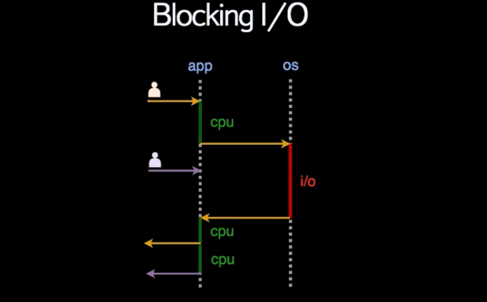

Типы данных
- Типов данных всего 6:
- Числа
- Строки
- Булевы величины
- Неопределенные величины
- Объекты и массивы
- Функции
- Числа
- Системы счисления
- По умолчанию установлена десятичная
- 0x -- шестнадцатиричная
- 0o -- восьмеричная
- 0b -- бинарная
- Память
- Отводится 64 бита под число:
- 1 бит под знак
- несколько под позици плавающей точки
- само число
- 0x -- шестнадцатиричная
- 0o -- восьмеричная
- 0b -- бинарная
- Отводится 64 бита под число:
- Экспоненциальная запись
- 2.9998e8 Представится как 2.9998 * 10^8 = 299980000
- Бесконечность
- Infinity
- -Infinity По умолчанию больше (меньше) любого числа в JavaScript
- NaN (Not a Number)
Образуется в результате херовых операций с числами - Объекты, массивы, функции будут рассмотрены дальше
- Системы счисления
- Строки
- Могут декларироваться одинарными или двойными кавычками
- Некоторые символы приходится экранировать
например \\ или \' экранируются в \ и ' соответственно - Используют таблицу Unispan
- Являются неизменяемыми
- Методы:
- '...'.length -- Возвращает длину строки
- '...'.slice(..., ...) -- Принимает 2(1) аргумента, возвращает новую обрезанную с 1 по 2 аргумент строку
- '...'.indexOf(..., ...) -- Принимает 2(1) аргумента, возвращает true, если нашел подстроку, начиная со 2 аргумента
- '...'.toLowerCase() -- Приводит к нижнему регистру
- '...'.trim() -- Удаляет пробелы с начала и конца
- '...'.startsWith(...) -- Говорит, начинается ли строка с подстроки
- Логический тип
- true
- false
- Неопределенные типы данных
- undefined
- null
Оператор typeof
- Возвращает тип аргумента
- Синтаксис оператора: typeof x;
- Синтаксис функции: typeof(x);
- Работают одинаково
parseInt
Принимает 2 аргумента:- Строка, которую необходимо преобразовать
- Система счисления, к которой необходимо преобразовать
Number()
Принимает 1 аргументparseFloat
Принимает 1 аргументПеременные
2 способа декларации- var
- const и let введены в ES6
Именование
- Первый символ:
a-z _ $ - Остальные символы:
a-z A-Z 0-9 _ $ - Принятый стиль: camelCase
- Запрещается использование ключевых слов в именах
- Если используется var, константы именуются с большой буквы
- Первый символ:
Комментарии
- Блочные: /* ... */
- Строчные: // ...
Операторы
В порядке уменьшения приоритета:- Унарные
- ++
- --
- +
- -
- ! (логическое отрицание)
- Бинарные
- *
- /
- %
- +
- -
- + (конкатенация строк)
- Сравнения
- <
- <=
- >
- >=
- == (нестрогое сравнение (с приведением типов))
- !=
- === (строгое сравнение (без приведения типов))
- !==
- Логические
- &&
- ||
- Присваивание
- Простое
- Составное
- Условные опреаторы
if(...) { ... } else { ... }- Тернарный условный оператор
(expression) ? true-block : false-block - switch-case:
switch(expression) { case 'value1': ... [break]; case 'value2': ... [break]; ... default: ... }
- Унарные
Точка с запятой (строгий режим и режим обратной совместимости)
- Точка с запятой может не ставиться в нестрогом режиме, но это может привести к ошибке
- Для включения строгого режима в начале файла пишется: 'use strict';
Массивы
- Спископодобный тип данных, который может хранить в себе список, содержащий значение (в том числе строки, массивы, etc)
- Итерирование по массиву может осуществляться циклом for или методом forEach
- Методы и свойства:
- [...].forEach(callback-function) -- передается функция, которая 1 аргументом принимает текущий элемент, 2-м -- текущий индекс и делает всякие штуки
- [...].filter(callback-function) -- передается аналогичная forEach-ной функция, но возвращает true или false, согласно которым строится новый массив из не только лишь всех элементов
- [...].map(callback-function) -- передается аналогичная forEach-ной функция, но полученные значения запишутся в новый массив
- [...].join('...') -- Принимает строчку и с ее помощью конкатинирует все элементы массива
- [...].length -- Возвращает количество элементов в массиве
- [...].push(...) -- Принимает новое значение и добавляет его в конец массива
- [...].pop() -- Удаляет последний элемент массива и возвращает его
- [...].sort(callback-function) -- Сортирует массив (может принимать функцию сортировки), по умолчанию сортирует по алфавиту
- [...].every(callback-function) -- Проверяет, удовлетворяют ли ВСЕ элементы массива условию
- [...].some(callback-function) -- Проверяет, удовлетворяет ли ХОТЯ БЫ ОДИН элемент массива условию
- [...].shift(...) -- Удаляет первый элемент массива и возвращает его
- [...].unshift(...) -- Принимает новое значение и добавляет его в начало массива
- [...].concat(другойМассив) -- Объединяет массивы. В результате образуется новый массив
- [...].slice -- Работает, как и для строк, но если не передать параметры, вернет копию
- [...].splice(from, howMuch, '...') -- from - откуда считаем, howMuch - сколько удаляем, последним - чем замещаем
- reduce (охуевшая пизда)
[...].reduce(callback-function, accumulator)- callback-function получает 1 аргументом текущее значение аккумулятора,
вторым -- текущий обрабатываемый элемент в массиве
возвращает значение, которое записывается в аккумулятор - accumulator может быть произвольного типа, в том числе и сложного
- reduce можно херачить цепочками и делать вообще адовые вещи
- после применения метода reduce получаем какое-то значение, которое надо куда-то записать
- NB: если нихера не понятно -- лучше посмотреть лекцию или почитать в учебнике
- callback-function получает 1 аргументом текущее значение аккумулятора,
вторым -- текущий обрабатываемый элемент в массиве
- Функции для работы с массивом можно вызывать друг за другом в цепочке, образуя
цепочку вызовов
Объекты
- Список, состоящий из пар ключ(свойство)-значение
- Ключ может быть строкой или числом (преобразуется к строке)
- Значение может быть произвольного типа
- Создание:
let obj = { author: 'Petya', countRow: 18, haveSubscribe: true, childAuthor: { name: 'Lesha', age: 5 } }
(под капотом во время присваивания вызывается конструктор = new Object({...})) - Добавление свойства: объект.свойство = 'ето новое свойство типа строка';
- Добавление метода или свойства:
Object.defineProperty(объект, 'toString', { /* принимает объект, название нового свойства и объект конфигурирования, описывающий параметры свойства или метода */ value: function() { // м.б. примитив или функция return 'хаю-хай' }, writable: true, // перезаписываемое enumerable: false, // перечисляемое (не возвращается при Object.keys(...), for (... in ...)... ) configurable: true // конфигурируемое и удаляемое (не связано с writable) // последние 3 по умолчаниюfalse}); - Также существует метод defineProperties, позволяющий декларировать сразу несколько свойств объекта
- Метод Object.getOwnPropertyDesctiptor(объект, 'свойство') позволяет получить данные об объекте конфигурирования свойства объекта
- Удаление свойства: delete объект.свойство; -- возвращает true или false
- Обращение:
- Точечная нотация -- объект.свойство
- Через [...] (в скобках можно передать выражение) -- объект['свой' + 'ство']
- Итерирование: var ключ = Object.keys(объект);
и for (... in ...) ...
- Возвращает массив строк (ключей) NB: (это будут перечисляемые свойства)
- Существует также Object.values(obj), но технология является экспериментальной
- Наличие свойства: объект.hasOwnProperty('свойство');
- Возвращает true или false
- Кавычки писос как важны
- Геттеры и сеттеры -- альтернативные способы декларации свойств и методов объекта
- специальные методы объекта, которые вызываются при обращении к свойству на чтение и на запись
- удобно при работе с динамическими свойствами, регулируя правила работы с ними и ограничения
Object.defineProperty(объект, 'свойство', { get: function() { return this.другоеСвойство; }, set: function(value) { this.другоеСвойство = parseInt(value) || 0; } });- Геттеры срабатывает при обращении на чтение, например объект.свойство
Сеттер срабатывает при обращении на запись, как то: объект.свойство = 'cerf'
- Заморозка
- Задается при помощи Object.freeze(объект)
- Убирает writable, configurable, но оставляет enumerable: true
- Object.isFrozen(объект) возвращает true, если объект заморожен
Объект Date
- new Date(); создает объект с текущей датой в системном часовом поясе
- new Date('строка'); попытается преобразовать строку к дате
- new Date(число); преобразует как количество секунд, прошедших с полуночи (00:00:00 UTC) 1 января 1970 года (UNIX Timestamp)
- new Date(число, число[, число, ...]); год, месяц(начиная с 0) [, день, часы, минуты, секуды и мс
- (new Date(что-то)).valueOf(); вернет UNIX Timestamp (секунды) от переданного
- Date.now(); вернет текущий UNIX Timestamp (секунды)
- Старый, работает хуево. Образца Java 1995. Рекомендуется ознакомиться с документацией.
Объект Math -- библиотека мат. функций и констант
- Math.random(); возвращает случайное число от 0 до 1
- Math.min(2 и более значений); выбирает минимальное
- Math.max(2 и более значений); выбирает максимальное
- Округление
- Math.round(число); округляет арифметически
- Math.floor(число); округляет вниз
- Math.ceil(число); округляет вверх
- Math.log(число); вернет натуральный логарифм
- Math.pow(числоA, числоB); вернет ab
- Есть еще дохера, типа синус, тангенс, etc
Функции
- Именованный блок кода
- Позволяет повторно использовать код, рекурсивно его вызывать, создавать область видимости
- Принцип DRY -- Don't repeat youself
- Может возвращать или не возвращать значение NB: во втором случае неявно возвращает
undefined - Являются объектами высшего порядка:
Могут быть переданы в другие функции в качестве аргумента, а также могут иметь личные свойства, как и другие объекты
- Аргументы функции
- Может иметь или не иметь входные параметры
- Количество аргументов
- БОльшее число параметров игнорируется
- Меньшее -- остальные получаеют значение undefined
- Решение -- проверки:
- через if
- через a = a || Infinity (апасно, нарушается семантика)
- Именованные аргументы: передается один аргумент (params), предполагающийся объектом с имеющимися полями:
function BMI(params) { var height = params.h; return params.w / (h * h); } BMI({w: 60, h: 1.7});
Достоинства:удобен, если много необязательных аргументов, не важен порядок, неограниченное число аргументов, легко рефакторить
Недостатки:Неявный интерфейс, неудобно работать с аргументами внутри функции - Объект arguments -- массивоподобный объект, содержащий передаваемые аргументы
function sum() { arguments.length; // 2 var a = arguments[0] || 0; // первый аргумент var b = arguments[1] || 0; // второй аргумент return a + b; } sum(5, 3); // 8 sum(3); // 3ето не массив, но может им стать: var args = [].slice.call(arguments); - Метод call:

- Входные параметры передаются по значению или по ссылке:
- По значению передаются примитивы: число, строка, etc
В этом случае все, что происходило с ним внутри функции, остается внутри функции (копируется) - По ссылке передаются сложные типы данных: массив, объект, функция, etc
В этом случае все изменения с этими данными изменяют передаваемый параметр, работая непосредственно с ним
- По значению передаются примитивы: число, строка, etc
- Объявления функции
- function declaration: обычное объявление
можно вызвать до объявления - function expression: функция присваивается переменной, описывается без имени
нельзя вызвать до объявления - named function expression:
var fact = function inner(n) { return n === 1 ? 1 : n * inner(n-1); }
имя переменной доступно только снаружи, имя функции доступно только изнутри - Конструктор функции: var add = new Function('a', 'b', 'return a+b');
не рекомендуется к использованию(может быть полезен для конструирования функции на лету)
- function declaration: обычное объявление
Обработка исключений
- Применяется для того, чтобы не обрабатывать все возможные варианты всех возможных значений, а просто кинуть ошибку, если данные хуевые
- throw new TypeError('Vse huevo');
- Могут быть разные ошибки на все случаи жизни
- Как правило на практике используется конструкция try ... catch
try { /* всякие штуки, которые могут вызвать исключение */ } catch(e) { /* обработка исключение, с помощью instanceof NAMEERROR */ /* e -- это объект исключения, содержит поля name, message, stack */ }
Сравнение разных типов данных
- Объект и строка:
- Сначала к левому и правому операндам применяется внутренний метод isPrimitive(...), отвечающий, является ли он примитивным типом
- Проверяет, существует ли у левого операнда функция .toString:
typeof операнд.toString === 'function'; // true или false - Если функция есть, то она применяется и сравнивается результат ее работы со строкой
- Сравнение двух сложных типов данных почти всегда вернет false, кроме случая, когда оба объекта ссылаются на один и тот же объект в памяти
- Существует строгое и нестрогое сравнение (=== и ==). Второе допускает неявное преобразование левого операнда к типу правогоNB: рекомендуется всегда юзать строгое
- Приведение объекта к строке:
- String(объект);
- '' + объект;
- Объект и строка:
Регулярные выражения
- Записывается внутри /.../
- Существуют флаги, пишущиеся после /.../(СЮДА), например, g (глобальное сопоставление) или i (игнор регистра)
- Две функции для работы с регвырами:
- регвыр.test(что-то) проверяет содержание регвыра в строке
- регвыр.replace(что-то) замена подстроки в строке на основе регвыра
- Обрамление регвыра в круглые скобки /(...)/ "вынимает найденные данные из строки" и отправляет в переменную $N, где N -- уровень вложенности скобок
- Имеют PCRE-совместимый синтаксис (Perl Compatible Regular Expression)
Область видимости
- Глобальная (переменная или функция объявлена в глобальном объекте, если она объявлена не в теле другой функции)
- Локальная (в нее помещаются все переменные и аргумент, объявленные в функции)
- в ES6 добавлена блочная область видимости
- Интерпретатор видит переменные, объявленные в родителе и выше
- Затенение -- если внутри одной функции объявляется другая с именем переменной, которое уже существовало в родительской, то на время работы дочерней функции эта переменная принимает ближайшее значение
Всплытие
- Существует 2 условных части исполнения кода:
- Инициализация: код просматривается на предмет инициализации переменных и функций
- переменные всплывают только в пределах области видимости
- функция не всплывет, если объявлена через function expression, ибо функция окажется в переменной только в момент присваивания
- Выполнение
- Инициализация: код просматривается на предмет инициализации переменных и функций
-
Замыкание -- функция со всеми ее внешними переменными, к которым она имеет доступ
- Очистка мусора при выделении памяти под новую переменную происходит за счет механизма
счетик ссылок:
будет ненулевым, если к переменной есть доступ в данный момент (даже неявно, например, при вызове извне функции, в которой данная переменная определена) - NB: Паттерн "модуль" также создает область видимости, чтобы переменные имели внутри нее уникальные имена
чтобы воспользоваться им, можно использовать IIFE (immediately-invoked function expression):var func = (function () { ... }());
теперь из-за механизма "Затенение" испортить функции внутри func нельзя
- Очистка мусора при выделении памяти под новую переменную происходит за счет механизма
-
this и контекст исполнения
- Контекст исполнения тесно связан с областью видимости и содержит ее.
Кроме нее, содержит еще и ключевое слово this - this
- this работает почти так же, как и везде, свойства:
- ключевое слово
- нельзя перезаписать
- указывает на текущий объект
- можно использовать за пределами объекта
- this опредяляется в момент интерпретации участка кода (в функции в момент вызова)
- this зависит от следующих параметров:
- Тип участка кода
- Глобальный:
- в бразуере в глобальной области видимости this ссылается на window
- в Node.js в глобальной области видимости this ссылается на global
- console.log(); также вызывается у глобального объекта, работает аналогично: this.console.log();
- Node.js модуль:
- module.exports.свойство = значение; работает так же, как и this.свойство = значение;
- импорт модуля осуществялется при помощи var value = require('./модуль');
(NB: в качестве результата получаем "тот самый объект, который мы (кто "мы"?) экспортировали из модуля
- Глобальный:
- Как мы попали на этот участок (кто "мы"?) !! разобраться
- Если функция объявлена в глобальной области видимости, то this внутри функции ссылается на global/window
- Если функция описана в модуле Node.js, то this вернет объект, экспортируемый этим самым (почему "самым"??) модулем
- Если функция вызвана в качестве значения поля объекта, то this будет ссылаться на этот объект
- ЕСЛИ функция кладется в память в качестве значения некоторой переменной,
то this внутри нее будет ссылаться на глобальный объект, притом не важно,
где была определена функция
(Такое поведение называетсязаимствование метода
) - Если функция была передана в качестве callback, то его контекст как бы явно не задан
и в качестве this подставляется global (Проблема):
- сохранить контекст исполнения в переменную: var _this = this;
- в языке предусмотрена передача контекста исполнения callback'a вторым аргументом
(не все функции, работающие с callback, принимают его контекст выполнения -- на помощь придет .bind();, описанный ниже)
- this будет ссылаться на объект, от которого был позван метод даже если интерпретатор нашел метод в цепочке его прототипов
- Методы:
- .call()(вызывается у функции)
вызывает функцию с указанным значением this и индивидуально предоставленными аргументами: function.call(thisArg, arg1, arg2, ...);
может быть использован для использования чужих методов у какого-либо объекта - .apply()(вызывается у функции)
вызывает функцию с указанным значением this и агрументами в виде массива: function.apply(thisArg, [arg1, arg2, ...]);
может быть использован для того, чтобы передать аргументы в виде массива (ваш кэп) - .bind()(вызывается у функции)
создает новую функцию, устанавливающую при вызове контекст исполнения this предоставленное значение: function.bind(thisArg, arg1, arg2, ...]);
по факту записывается как и передача контекста вторым аргументом, только вместо }, this); подставляется }.bind(this)); - также .bind() позволяет использовать "частичное применение":
var binPow = Math.pow.bind(null, 2); binPow(2); // 4 binPow(8); // 256 - (NB: можно передавать и null в качестве this)
- .call()(вызывается у функции)
- Режим работы интерпретатора:
- В режиме обратной совместимости this совпадает с контекстом, в котором была вызвана функция
- В строгом режиме для функции, вызванной в global значение this -- undefined
- Функция eval(...); используется в js для того, чтобы
интерпретировать код, написанный в виде строки (в т.ч. можно обращаться ко
внешним переменным и юзать this):
- если eval работает внутри метода объекта, то ссылается на этот объект
- если eval работает внутри метода объекта неявно (через объявление переменной), то ссылается на глобальный объект
- Тип участка кода
- this работает почти так же, как и везде, свойства:
- Контекст исполнения тесно связан с областью видимости и содержит ее.
-
Прототипы
- Определение.Представляют собой объекты, на которые указывает ссылка во внутреннем поле [[Prototype]]
- Являются способом избавления от проблемы дублирования кода (аналогично функциям), выделяя общий части кода в отдельный объект
- Прототипами, как правило, являются некоторые базовые конструкции, с помощью которых создаются более законченные
- Рефакторинг можно осуществить с помощью метода call, но это неудобно, хотелось бы вызывать методы и свойства, как родные для объекта
- Для внедрения прототипирования у объекта существует специально поле [[Prototype]]
для записи в него ссылки на другой объект существует несколько способов:- Сеттер/геттер __proto__:
объект.__proto__ = другойОбъект
появился только в ES6 - Object.create(...)
-- принимает в качестве параметра желаемый прототип
делает больше работы, чем нам здесь надо и создает только новые объекты
создать объект с самой короткой цепочкой прототипов: var qqq = Object.create(null); - метод setPrototypeOf(..., ...)
-- принимает объект и его желаемый прототип
- Ведет себя "лучше", чем __proto__, хотя и схож с ним:
- выкидывает ошибку при попытке присвоить дерьмо (напр. число)
- существует обратный метод getPrototypeOf(), возвращающий ссылку на прототип (появился раньше)
- Сеттер/геттер __proto__:
объект.__proto__ = другойОбъект
- Как это работает:
- Если при обращении соответствующего поля у объекта не обнаружено, то интерпретатор будет искать его в прототипе, затем в прототипе прототипа и так далее, пока не встретит null в поле [[Prototype]]
- По умолчанию любой объект в поле [[Prototype]] имеет ссылку на
глобальный прототип, содержащий общие методы для всех объектов
(например, Object.prototype.toString())
уже глобальный прототип имеет null в поле [[Prototype]] - Существуют более локальные прототипы, например Array.prototype
- Циклическое прототипирование выкидывает эксепшен
- Если попытаться поменять значение, которого нет у объекта,
но есть в его прототипе, то произойдет добавление поля к объекту
и
эффект затенение свойства
(Благодаря этому эффекту можно добиться и затенения общих методов из глобального прототипа) - Особенности работы writable:
Однако, если установить writable: false; свойству прототипа, то новое свойство у объекта прописать не получится и присваивания также не произойдет (эффект затенения не будет работать) , что логично, но контринтуитивно - Особенности работы сеттеров/геттеров (set/get):
Также, если поле в прототипе определено с помощью set: ... или get: ..., то эффект затенения также работать не будет и присваивания не произойдет - Особенности работы enumerable:
- Оператор for ... in перечисляет не только свойства самого объекта, но и свойства его прототипа
- объект.hasOwnProperty('свойство'); позволяет вывести только собственные поля объекта через оператор for ... in, если это необходимо
- Оператор Object.keys() сразу вернет только собственные значения объекта
- В глобальных прототипах все поля неперечисляемые по умолчанию
-
Конструкторы
Классический метод через прототипы:
- Решают проблему дублирования кода при создании большого количества однотипных объектов
- Можно запилить самому:
function createStudent(name) { return { name: name, sleep: function () { console.info('zzz...'); } }; }, однако, тогда придется каждый раз создавать новый метод (здесь: sleep()
Решение: вынести методы в прототип: - Конструкторы, которые встроены в язык JavaScript:
- Любая функция с оператором new (можно указывать поля при помощи ключевого слова this, т.к. фактически оно будет указывать на создаваемый объект (формально это не совсем так: в функции в this неявно записывается пустой объект, затем он наполняется свойствами и после возврается (также неявно))
- Объект-прототип для конструктора хорошо бы прописать в специальное поле:
данное поле .prototype:- во 1) есть у каждой функции
- вовторых хранит объект
- втетьих 3)имеет смысл только при вызове функции как конструктора
- неперечисляемое
- хранит ссылку на саму функцию-конструктор, например, чтобы посмотреть , с помощью какой функции был сконструирован объект
- НА КАРТИНКЕ -- НЕ ВЕРНО!!, т.к. убивается поле .constructor при перезаписи Student.prototype. Логичнее поле .prototype просто дополнять методами
- хранимый в поле .prototype объект изначально
непуст и хранит особое поле .constructor:
- Функции-конструкторы по договоренности именуются с Заглавной буквы.
Если накосячить и вызвать ее не как конструктор, то можно записать в глобальный объект лишнюю хуйню. А это не есть хорошо.
(фиксится включением строгого режима) - Если "испортить" функцию-конструктор, возвращая что-то явно, то:
- Если явно возвращается объект, интерпретатор допускает это
- Иначе -- игнорирует наш return
- Цепочки прототипов при создании объекта конструктором:
- Проблема: хочу вызвать методы из прототипа одного объекта в другом объекте,
у которого уже есть прототип:
- Можно записать Student.prototype = Person.prototype;, затем дополнить его полями: Student.prototype.sleep = function () {...};
- Будет работать для него, но, формально выражаясь, все прототипы конструкторов,
передаваемые друг в друга, будут хранить ссылку на один и тот же объект, таким образом,
конструктор Person и вовсе перестанет быть универсальным, т.к. будет иметь в поле
.prototype объект с полем sleep.
В сухом остатке: - Поможет метод Object.create(...), принимающий в
качестве аргумента желаемый прототип для возвращаемого методом значения:
Student.prototype = Object.create(Person.prototype);
Также придется вручную вернуть поле .constructor
(подробнее про .create: по ссылке)
- Инспектирование связей:
- Метод getPrototypeOf(...)
- Метод isPrototypeOf(...) -- отвечает на вопрос:
является ли объект прототипом объекта, передаваемого в аргументе?
Student.prototype.isPrototypeOf(billy); // true
Также корректно работает и с цепочкой прототипов (вплоть до глобального):
Person.prototype.isPrototypeOf(billy); // true - оператор instanceof:
делает примерно то же самое, работает по цепочке (1-я зависимость, null, 2-ая зависимость, ...):
(Разумеется, если "там null", возвращается false: var qq = Object.create(null);
qq instanceof Object; // false)
- Если вдруг захочется избежать дублирования кода в конструкторах, можно вынести
код в общий прототип, но тогда необходимо вызвать конструктор прототипа внутри
конструктора объекта:
function Student(name) { Person.call(this, name); // this ссылается на новый объект студента } - Если хочется вызвать затеняемый метод в затеняющем, то можно воспользоваться пресловутым методом .call():
Метод .create
- Чтобы не париться с кучей сложных зависимостей, просто для каждого нового объекта в цепочке прототипов хуярим Object.create() от предыдущего прототипа, дополняем своими полями и полчучаем, что надо. При создании экземпляра также используем Object.create() (а че бы нет?)
- метод Object.create() на самом деле приниает 2 аргумента: вторым аргументом передаются поля со своими начальными значениями, которые хочется ЕЩЕ увидеть при создании объекта:
- фабрика объектов -- это функция, помогающая спавнить объекты
возвращает объект со всеми предыдущими полями и дополнительными, которые передаются 2-м аргументом:
Классы
- Добавлены в новой версии спецификации
- Похожи на нормальный адекватный ООП
- По факту представляют собой обычные конструкторы
- typeof имяКласса вернет function
Сухой остаток
Все способы являются верными. "Классы" предпочтительнее перед функциями-конструкторами в виду доп. ограничений. Использование Object.create() позволяет строить более гибкие функции (например, миксины) (сказать только, если спросят!!)
Асинхронность
- Введем несколько новых понятий:
- Стек вызовов -- структура, которой оперирует интерпретатор.
Хранит текущие функции, внутри которых находится этот самый (почему "самый"??)
интерпретатор в том порядке, в котором они вызывались.
При исполнении кода внизу стека всегда лежит IIFE
При выбрасывании исключения выводится стек вызовов для удобства дебагинга
Сюда функция попадает либо из очереди, либо если вызывается новая функция внутри той, которая уже есть на стеке - Очередь событий -- подносит новые функции в стек вызовов, когда он пуст. Формально после того, как очередь событий не сможет в очередной раз передать новую функция в стек вызовов, программа закончит работу. Вместе они образуют Цикл событий
- Стек вызовов -- структура, которой оперирует интерпретатор.
Хранит текущие функции, внутри которых находится этот самый (почему "самый"??)
интерпретатор в том порядке, в котором они вызывались.
При исполнении кода внизу стека всегда лежит IIFE
- Системные таймеры
- setTimeout
- setTimeout(func[, delay, arg1, ...])
- func будет положена в очередь событий единожды по прошествии delay(ms)
- Интерпретатор заводит системный таймер на delay и по прошествии delay сработает системный таймер и функция func попадает в очередь событий
- setInterval
- setInterval(func[, delay, arg1, ...])
- func будет класться в очередь событий каждый раз по прошествии delay
- для остановки системного таймера используется метод clearInterval(id);, который очистит системный таймер (NB: id -- результат вызова метода setInterval (предварительно присвоим его в id))
- setTimeout
- Асинхронные операции как способы положить функцию в очередь событий
- Чтобы положить функция в Event Queue, можно выполнить асинхронную операцию, в результате которой будет вызван callback -- функция обратного вызова.
- Во время синхронных операций интерпретатор не может выполнять другую полезную работу, основной поток выполнения блокируется
- В случае асинхронной операции ошибка передается в callback, тогда как синхронная сразу кидает эксепшен
- Способы работы с асинхронным кодом
- callback передается последним параметром:
- Первым аргументом принимает ошибку, если ее нет -- null
- Вторым аргументом передаются данные, с которыми завершилась операция
- Достоинства:
- Нет накладных расходов
- Не нужно ничего подключать
- Самый быстрый высокопроизводительный код
- Используется для написание кода внешней библиотеки
- Являются стандартном работы с асинхронным кодом
- Недостатки:
- Глубокая вложенность (саб-зиро)
- Ошибки и данные обрабатываются в одном куске кода
- Невнимательность как причина необработки всех исключений
- Лишние переменные в результате обраной синхрнизации
- Promises
- Вызывается конструктором промиса, принимающий первым аргументом функцию, внутри которой содержится работа с асинхронным кодом.
- Эта функция принимает первым аргументом успешные данные, вторым ошибку
- Promise имеет 3 состояния:
неопределенное (начальное), fulfilled и rejected (оба конечные), во второе промис переходит при возникновении ошибки в callback - Результат работы промиса передается в обработчики:
- .then(func1 (data) {}, func2 (err) {})
- .then(console.log, console.error)
- Достоинства:
- Ловятся некотрнолируемые исключения
- Можно настроить несколько обработчиков (цепочка промисов)
- Недостатки:
- Дополнительная обертка
- Медленнее, чем callback
- Цепочка промисов
- Промис после работы своего .then создает новый промис
- Можно до посинения вызывать новые .then и обрабатывать вообще все
- Пригодится, если ошибки могут возникнуть в разных местах и на разных этапах:
- Теперь можно повыкидвать identity и thrower и в первом случае вызвать .catch() вместо .then(), а во втором просто передать .then() с одним аргументом
- Параллельное выполнение промисов
Promise .all([массив промисов]) .then(func); - Можно создать промис без совершения асинхронных операций,
надо его сразу зарезолвить или зареджектить:
Promise .resolve('{"name": "serezha"}') .then(console.log);В этих случаях промис сразу переходит в указанное состоянии с теми данными, которые мы передали в скобки resolve или reject
- callback передается последним параметром:
- Введем несколько новых понятий:
-
Node.js
- Введение, история, общие понятия
- Операции в веб-приложении:
- Чтение HTTP-запроса -- I/O-bound
- Парсинг запроса -- CPU-bound
- Запрос к базе данных -- I/O-bound
- Запрос к API -- I/O-bound
- Генерация HTML -- CPU-bound
- Отправка HTML -- I/O-bound
- Оптимизация I/O-bound операция позволит улучшить работу веб-сервера
- В рамках одного потока одновременно исполняется только одна операция
- Блокирующий ввод-вывод накладывает существенные ограничения на производительность: 
- Решения проблемы:
- Multithreading -- поднятие еще 1 потока
Ограничения:- Небесплатная операция (можно обойтись пуллом подготовленных заранее потоков)
- Есть лимит на количество поднимаемых потоков в ОС
- Требует отдельной памяти на каждый поток
- Неблокирующий ввод/вывод -- ОС регистрирует запрос и возвращает управление
Принцип работы:- Регистрация происходит в Event Demultiplexer (resorce, operation, callback)
- После готовности, ED кладет в Event Queue событие о том, что ресурс готов вместе с cb
- Event Loop в бесконечном цикле разбирает очередь, вызывая обработчики, выполняющиеся на стороне приложения. После этого забирает управления назад, разбирая новое событие.
- Apache vs Nginx
- Multithreading -- поднятие еще 1 потока
- Node.js была создана разработчиком по имени Ryan Dahl:
написал обертку libuv для работы с I/O и доработал ее - Для взаимодействия с неблокирующим I/O нужно указать ссылку на обработчик результата (callback)
Для этого синхронные методы меняются на асинхронные Этот паттерн(callback) cледует 2 правилам:- cb всегда передается последним аргументом
- Ошибка в cb передается первым аргументом
- Почему JavaScript?
- во 1) есть функции первого класса и замыкания, то бишь можно передавать функцию в качестве параметра
- вовторых язык готов к работе с Event Loop (уже взаимодействует с ним в браузере)
DOM-events, setTimeout - втетьих 3)JS простой -> имеет большое комьюнити
- Для привлечения аудитории "в коробку" был написан "Core JavaScript API":
- fs API, работающий с файловой системой
- http API, работающий с запросами
- console API, работающий с логированием
- По итогу для связки движка V8, библиотеки libuv, и Core JS API были написаны специальные bindings, связывающие C, C++, JS коды
- Все это в компоновке дало платформу Node.js
- Операции в веб-приложении:
- Модули -- фундаментальный блок кода для структурирования приложения в Node.js
- Модуль -- обычный js-файл
- Если модуль реиспользуется между приложениями -- это пакет
- Чтобы модуль приносил пользу -- необходимо экспортировать из него основную функцию
- Перед интерпретацией Node.js добавляет в модуль специальный объект module c метаинформацией о нем (в частности, полный путь до файла с модулем и пустой объект exports )
- В другом файле мы импортируем модуль при помощи функции require(./название.js); и на выход получаем то, что положили в объект при экспорте
- Экспортировать можно любые типы данных: функции, числа, конструкторы, объекты, etc
- Можно импортировать встроенные модули, которых довольно много, при помощи require('название');
- Можно импортировать сторонние модули других разработчиков, которых баснословно много, при помощи require('название');
- Модуль импортируется один раз и после первого require для данного модуля результат кешируется в специальном свойстве require.cache
- Алгоритм поиска испортируемой функции: сначала проверка на встроенный, затем проверка на то, что начинается с './', '/' или '../', последним -- поиск в node_modules начиная с текущей директории и вверх
- Пакетный менеджер npm (Node Package Manager)
- Это инструмент командной строки, ставится вместе с нодой, команды:
- npm init -- создает манифест package.json для описания модуля:
- package.json вместе с самим модулем образует пакет
- Содержит название, версию, зависимости и много разного
- npm search ... -- поиск пакета в хранилище по имени
- npm show ... -- основная информация о пакете
- npm install ... -- установка пакета в качестве зависимости в node_modules
(подзависимости установятся как зависимости у зависимости) - npm install ...@2.3.4 -- установка определенной версии:
- Зависимости фиксируются в манивесте в разделе "dependencies"
- Если "dependencies" заполнить вручную, а затем вызвать
npm install, то все установится само:
- различные символы перед номером версии или вместо него задают "хотелки" для версии (>1.2.3, ^1.2.3, ...)
- можно передать теги (latest, ...)
- можно указать git-url даже с тегом, веткой или коммитом
- еще много чего
- Опции файла .npmrc:
- save=true -- npm install теперь всегда фиксирует зависимости
- save-exact=true -- npm install теперь всегда строго фиксирует версию
- init-author-name='serezha' -- включает автозаполнение для полей npm init'a
- npm init -- создает манифест package.json для описания модуля:
- http-клиент и http-сервер на Node.js
(для того, чтобы принимать запросы пользователей и отвечать на них
или наоборот сделать запрос и прочитать ответ от сервера)
отлично подходит модуль http: require('http');, require('url');, require('querystring');
модуль использует EventEmitter, часто использующийся в модулях для организации процесса подписки на события, отписки и пр.
лучше посмотреть видяшку - Работа с файловой системой:
- используется модуль 'fs', позволяющий асинхронно прочитать файлы
- используется модуль 'buffer' для работы с бинарными данными
- содержимое файла -- это бинарные данные, читается либо с помощью метода toString(), либо указав кодировку в качестве параметра fs.readFile
- что еще умеет модуль fs?
- fs.appednFile();
- fs.writeFile();
- fs.unlink(); -- удалить файл
- fs.mkdir(); -- работать с директориями
- fs.watch(); -- позволяет следить за содержимым файла
- Предоставляет синхронные аналоги для всех функций, которые блокируют поток выполнения
- Введение, история, общие понятия